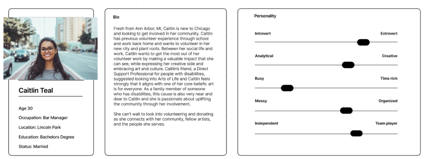

Meeting With Stakeholders
We were able to speak with the Director of External Relations (and part time web developer) for Arts of Life.
We focused on brand identity and feature prioritization. Key insights included inclusivity in design and
language and a professional yet approachable brand identity.

Brand Identity
The first thing our client said when asked to describe Arts of Life was "fun!" We wanted to capture this
exuberance, while still providing a professional and trustworthy experience.

Before we start designing, we need to do a bit of analysis and research. What are users looking for? What
are their priorities? How might we incorporate the needs of our users with the needs of our stakeholders?
What are our users looking for? We first needed to understand what users were looking for when they they
were deciding to support a non-profit. We conducted interviews in order to gain insight.

Analyzing Trends
After conducting interviews, we needed a way to identify broad trends across users. We did this by creating
an affinity diagram. Key insights included the importance of professionalism and transparency when
presenting the organization’s mission and a focus on local issues.

Creating Caitlin
To help us empathize with our users, we created a user persona. Happy Birthday to Caitlin Teal! Caitlin
informed our decision making throughout our redesign by allowing us to consider our choices through the lens
of a “real” person.

After fully understanding the pain points faced by Arts of Life, we were ready to start iterating.
We began by creating a Lofi Prototype to help us quickly test the layout of our site before we began to add styling.